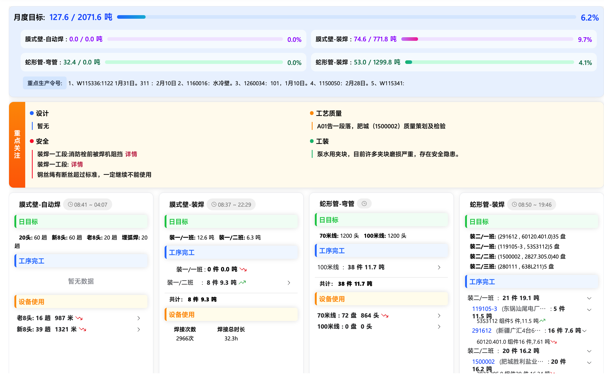

项目完工总览
生产工序跟踪
管子分厂
集箱分厂
核容分厂
科泰达
项目进度甘特图
当前月份：2026年02月
项目名称 / 编号
计划月份:
至
状态:
执行中
已完工
组件:
膜式壁
蛇形管
集箱
锅筒
组件号
名称
计划完工日期
主体材料
自动焊
装焊
完工
已完成
正常
延期完成
预警
告警

🏗️
集箱分厂生产看板
实时数据接口对接中...
🧪
核容分厂生产看板
实时数据接口对接中...
⚙️
科泰达生产看板
实时数据接口对接中...